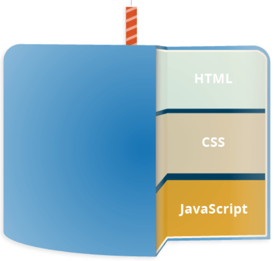
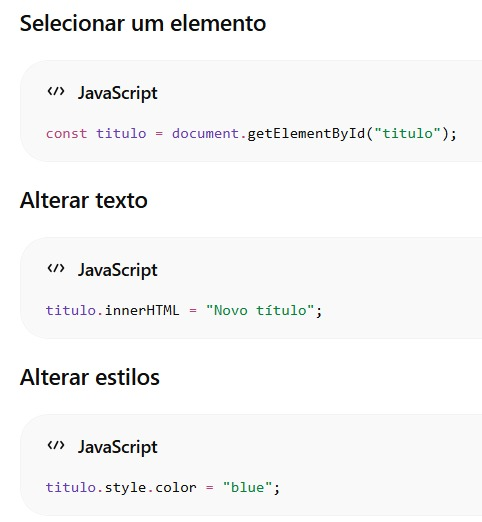
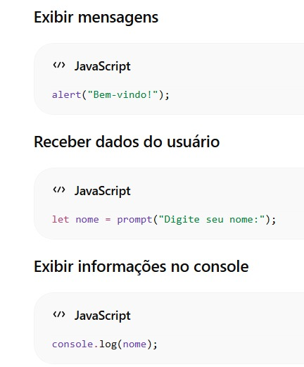

O que é JavaScript?
JavaScript é uma linguagem de programação que permite a você implementar itens complexos em páginas web. Toda vez que uma página da web faz mais do que simplesmente mostrar a você informação estática, mostrando conteúdo que se atualiza em um intervalo de tempo, mapas interativos ou gráficos 2D/3D animados e etc, você pode apostar que o JavaScript provavelmente está envolvido.
É a terceira camada do bolo das tecnologias padrões da web, duas das quais (HTML e CSS) nós falamos com mais detalhes ao longo do nosso resumo.

HTML - É a linguagem de marcação que nós usamos para estruturar e dar significado para o nosso conteúdo web. Por exemplo, definindo parágrafos, cabeçalhos, tabelas de conteúdo, ou inserindo imagens e vídeos na página.
CSS - É uma linguagem de regras de estilo que nós usamos para aplicar estilo ao nosso conteúdo HTML. Por exemplo, definindo cores de fundo e fontes, e posicionando nosso conteúdo em múltiplas colunas.
JavaScript - É uma linguagem de programação que permite a você criar conteúdo que se atualiza dinamicamente, controlar múltimídias, imagens animadas, e tudo o mais que há de interessante. Ok, não tudo, mas é maravilhoso o que você pode efetuar com algumas linhas de código JavaScript.
O que é ainda mais empolgante é a funcionalidade construída no topo do núcleo da linguagem JavaScript. As APIs (Application Programming Interfaces - Interface de Programação de Aplicativos) proveem a você superpoderes extras para usar no seu código JavaScript.
APIs são conjuntos prontos de blocos de construção de código que permitem que um desenvolvedor implemente programas que seriam difíceis ou impossíveis de implementar. Eles fazem o mesmo para a programação que os kits de móveis prontos para a construção de casas - é muito mais fácil pegar os painéis prontos e parafusá-los para formar uma estante de livros do que para elaborar o design, sair e encontrar a madeira, cortar todos os painéis no tamanho e formato certos, encontrar os parafusos de tamanho correto e depois montá-los para formar uma estante de livros.
Elas geralmente se dividem em duas categorias
APIs de navegadores que já vem implementadas no navegador, e são capazes de expor dados do ambiente do computador, ou fazer coisas complexas e úteis. Por exemplo:
1. A API DOM (Document Object Model) permite a você manipular HTML e CSS, criando, removendo e mudando HTML, aplicando dinamicamente novos estilos para a sua página, etc. Toda vez que você vê uma janela pop-up aparecer em uma página, ou vê algum novo conteúdo sendo exibido (como nós vimos acima na nossa simples demonstração), isso é o DOM em ação.
2. A API de Geolocalização recupera informações geográficas. É assim que o Google Maps consegue encontrar sua localização e colocar em um mapa.
3. As APIs Canvas e WebGL permite a você criar gráficos 2D e 3D animados. Há pessoas fazendo algumas coisas fantásticas usando essas tecnologias web — veja Chrome Experiments e webglsamples.
4. APIs de áudio e vídeo como HTMLMediaElement e WebRTC permitem a você fazer coisas realmente interessantes com multimídia, tanto tocar música e vídeo em uma página da web, como capturar vídeos com a sua câmera e exibir no computador de outra pessoa (veja Snapshot demo para ter uma ideia).
OBS: Muitas demonstrações acima não vão funcionar em navegadores antigos — quando você for experimentar, é uma boa ideia usar browsers modernos como Firefox, Edge ou Opera para ver o código funcionar. Você vai precisar estudar testes cross browser com mais detalhes quando você estiver chegando perto de produzir código (código real que as pessoas vão usar).
APIs de terceiros não estão implementados no navegador automaticamente, e você geralmente tem que pegar seu código e informações em algum lugar da Web. Por exemplo:
1. A API do Twitter permite a você fazer coisas como exibir seus últimos tweets no seu website.
2. A API do Google Maps permite a você inserir mapas customizados no seu site e outras diversas funcionalidades.
OBS: Essas APIs são avançadas e nós não vamos mais afundo sobre nenhuma delas nesse resumo.
Variáveis
Variáveis são espaços reservados na memória para armazenar informações que podem ser utilizadas posteriormente pelo programa.
Em JavaScript, as variáveis podem ser declaradas utilizando let, const ou var (menos utilizado atualmente)
let nome = "Letícia";
const idade = 20;
Há uma diferença muito importante entre as declarações de variáveis com var, let e const.
OBS: let - Permite alterar o valor posteriormente.
const - Cria uma constante, cujo valor não pode ser reatribuído.
let cidade = "São Paulo";
cidade = "Rio de Janeiro;
const pais = "Brasil";
// pais = "Argentina"; // ERRO
Tipos de Dados
Os tipos de dados definem quais informações podem ser armazenadas em uma variável.
String
Representa textos:
let nome = "Guilherme"
Number
Representa números inteiros ou decimais:
let idade = 25;;
let altura = 1.75;;
Boolean
Representa valores lógicos:
let aprovado = true;;
let ativo = false;;
Null
Representa ausência intencional de valor:
let usuario = null;;
Undefined
Significa que uma variável foi criada, mas ainda não recebeu valor:
let endereco;
Operadores
Operadores são símbolos utilizados para realizar operações.
Operadores Aritméticos
+ // Soma
- // Subtração
* // Multiplicação
/ // Divisão
% // Resto da divisão
Exemplo:
let resultado = 10 + 5;
Operadores de compração
São usados para comparar valores
== // Igual
=== // Estritamente igual
!= // Diferente
> // Maior que
< // Menor que
>= // Maior ou igual
<= // Menor ou igual
Exemplo:
console.log (10 + 5;)
Resultado:
true
Estruturas Condicionais
As estruturas condicionais permitem que o programa tome decisões.
If e Else
Executam diferentes blocos de código dependendo da condição.
Exemplo:
let idade = 18;
if (idade >= 18) {
console.log("Maior de idade");
} else {
console.log("Menor de idade");
}
Estruturas de Repetição
Laços de Repetição executam um bloco de código várias vezes.
For
Muito utilizado quando sabemso quantas vezes o código será repetido.
While
Executa enquanto uma condição for verdadeira.
Funções
Funções são blocos de código criados para executar tarefas específicas.
Elas ajudam a organizar o programa e evitar repetição de código, e são chamadas apenas quando chamadas.
Principais formatos
A linguagem permite diferentes formas de criar e estruturar funções. As três principais abordagens são:
1. Declaração de Função (Function Declaration) É a forma clássica. A Função é içada (hoisted), ou seja, pode ser chamada antes mesmo de ser declarada no código.
2. Expreção de Função (Function Expression) A função é armazenada dentro de uma variável. Neste caso, ela não sofre hoisting e só pode ser chamada após a sua definição.
2. Arrow Functions Introduzidas no ES6, oferecem uma sintaxe mais curta e limpa. Elas não possuem o seu próprio contexto de this.
3. Arrays São estruturas que armazenam vários valores em uma única variável
Para uma explicação mais visual sobre como as funções operam nos bastidores e ajudam a manter seu código organizado e reutilizável: O que é uma função e para quê serve em JavaScript?
Parâmetros e Retornos
As funções podem receber parâmetros, que são valores passados para a função executar sua tarefa.
Os argumentos são os valores passados quando chamamos afunção. Você também pode definir valores padrão para os parâmetros da função. Se o argumento não for fornecido, a função usa o valor padrão.
Retorno de Valores
Return é a palavra-chave usada para enviar o resultado da função de volta para o código que a chamou. Se a função não usar return ela retorna undefined por padrão.
Objetos
Objetos permitem armazenar informações organizadas em pares de chave e valor.
São amplamente utilizados para representar usuários, produtos, pedidos e duversas informações de aplicações reais.
Manipulação do DOM
DOM (Document Object Model) é a representação da página HTML que o JavaScript utiliza para acessar e modificar elementos

A manipulação do DOM é uma das funcionalidades mais importantes do JavaScript no desenvolvimento web.
Entrada e Saída de dados

O console é muito utilizado para testes e depuração de programas.
Boas Práticas em JavaScript
Utilize nomes de variáveis claros e significativos.
Prefira const sempre que possível.
Organize o código em funções.
Evite repetir código desnecessariamente.
Mantenha a indentação correta.
Comente apenas quando necessário para facilitar a compreensão.
Utilize o console para testar e identificar erros.
Seus primeiros passos no JavaScript: JS com Maik Brito | Roketseat
Conclusão
JavaScript é a principal linguagem de programação da web e está presente em praticamente todos os sites modernos. Seu papel é adicionar dinamismo e interatividade às páginas, permitindo criar desde simples efeitos visuais até aplicações complexas.
Para quem está começando, é fundamental compreender os conceitos de variáveis, tipos de dados, operadores, estruturas condicionais, laços de repetição, funções, arrays, objetos, manipulação do DOM e eventos. Esses conceitos formam a base necessária para avançar no desenvolvimento web e aprender frameworks modernos como React, Vue e Angular.
Cursos
Udemy | Curso Completo de JavaScriptAlura | Curso JavaScript